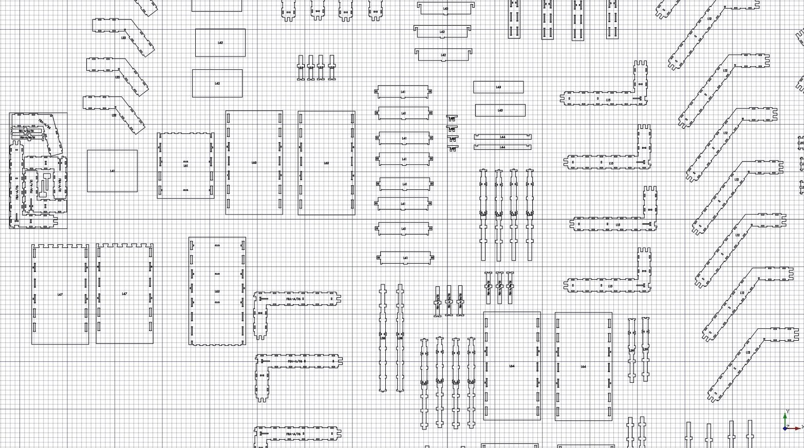

Arch Panel Cut
|
| Posizione nel menu
|
| Arch → Strumenti pannello → Sagoma pannello
|
| Ambiente
|
| Arch
|
| Avvio veloce
|
| P,C
|
| Vedere anche
|
| Pannello
|
|
Descrizione
Questo strumento crea, nel documento 3D, una vista piana, 2D di un pannello, da inserire in un Foglio pannello o da esportare direttamente in DXF.

Uso
- Selezionare uno o più oggetti Pannello
- Premere il pulsante Sagoma pannello, o premere i tasti P e poi C
- Regolare le proprietà desiderate
Opzioni
- Se il pannello non è piatto, ma, per esempio è ondulato il rilievo non appare nella Sagoma del pannello. Questo strumento è utile soprattutto per i pannelli piatti
- Sagoma del pannello può visualizzare un tag. Questo tag può essere una linea di testo personalizzata o può mostrare automaticamente il tag, l'etichetta o la descrizione del pannello a cui è collegato.
- Per essere utilizzato nelle lavorazioni CNC, il tag deve essere scritto con un font "appiccicoso", in cui le lettere sono semplici polilinee che la macchina possa seguire facilmente. Alla creazione, l'oggetto Sagoma del pannello utilizza automaticamente il carattere specificato in Modifica → Preferenze → Draft → Testi e Dimensioni → Font ShapeString
- Facendo doppio click su Sagoma del pannello nella vista ad albero dopo che essa è stata creata permette di entrare nella modalità di modifica e modificare la posizione del tag
- Quando è necessario posizionare insieme diverse sagome di pannelli, Sagoma pannello può visualizzare un margine, che è utile per assicurare che tra di loro sia sempre presente un certo spazio
Proprietà
- DATISource: L'oggetto Pannello mostrato da questa sagoma
- DATITag Text: Il testo da visualizzare. Può essere %tag%, %label% or %description% per visualizzare il tag del pannello o l'etichetta
- DATITag Size: La dimensione del testo tag
- DATITag Position: La posizione del testo tag. Tenere (0,0,0) per la posizionarlo automaticamente nel centro
- DATITag Rotation: La rotazione del testo tag
- DATIFont File: Il carattere del testo tag
- VISTAMargin: Un margine che può essere visualizzato all'esterno della sagoma del pannello
- VISTAShow Margin: Attiva o disattiva la visualizzazione del margine
- DATIMake Face: Se è True, il pannello è una Part Face, altrimenti è una Part Wire
Script
Lo strumento Pannello può essere utilizzato nelle macro e dalla console python tramite la seguente funzione:
makePanelCut (object)
Esempio:
import Arch,Draft
base = Draft.makeRectangle(500,200)
panel = Arch.makePanel(base,thickness=36)
Arch.makePanelCut(panel)
Tutorial
{kind=link}
{kind=link}